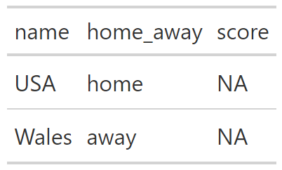
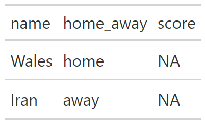
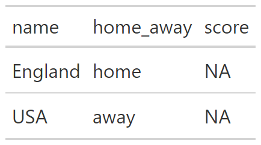
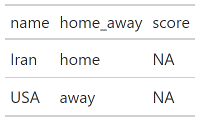
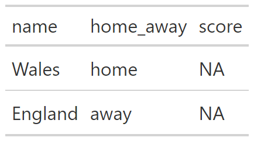

Group B
[1] “3854559 england-vs-iran”
Warning in dir.create(paste0(match_ids$match[i])): 'england-vs-iran' already
existsEngland vs Iran

[1] “3854560 usa-vs-wales”
Warning in dir.create(paste0(match_ids$match[i])): 'usa-vs-wales' already existsUsa vs Wales

[1] “3854562 wales-vs-iran”
Warning in dir.create(paste0(match_ids$match[i])): 'wales-vs-iran' already
existsWales vs Iran

[1] “3854561 england-vs-usa”
Warning in dir.create(paste0(match_ids$match[i])): 'england-vs-usa' already
existsEngland vs Usa

[1] “3854564 iran-vs-usa”
Warning in dir.create(paste0(match_ids$match[i])): 'iran-vs-usa' already existsIran vs Usa

[1] “3854563 wales-vs-england”
Warning in dir.create(paste0(match_ids$match[i])): 'wales-vs-england' already
existsWales vs England
